Tutoriel
Avant de commencer
Objectifs
Ce tutoriel a pour objectif de vous initier aux outils lino et pimo. A la fin de ce tutoriel vous pourrez :
- installer
lino/pimosur votre poste. - configurer
linopour vous connecter à une base de données. - extraire des données d'une base pour les recharger dans une autre.
- modifier certains champs pour anonymiser un flux de données.
- analyser les logs et les données en erreur.
Prérequis
Compétences
Voici la liste des compétences indispensables :
- Connaissance et utilisation de Git.
- Connaissance et utilisation de la ligne de commande Linux et/ou Windows (PowerShell).
- Utilisation d'un éditeur de texte (Dans ce tutoriel nous utiliserons Visual Studio Code).
- Connaissance de YAML (Vous pouvez consulter ce tutoriel YAML).
Outils
Pour ce tutoriel vous aurez besoin des outils suivants :
- un environnement "bash" (docker, linux, wsl2 ou git+bash) ou d'un "powershell".
- vscode
Environnement
Dans ce tutoriel nous allons utiliser l'application PetClinic composée de deux environnements:
-
Environnement de Production:
- SGBD : postgressql
- Host : bdd
- port : 5432
- user : jhpetclinic
- database: jhpetclinic
- mot de passe : jhpetclinic
- url : localhost:8080
-
Environnement de Qualification:
- SGBD : postgressql
- Host : bdd
- port : 5432
- user : jhpetclinic
- database : jhpetclinic
- mot de passe : jhpetclinic
- url : localhost:8001
Le schéma des données de l'application de prod et de qualification est le suivant :
 .
.
Installation
lino et pimo sont 2 outils écrit en GO et compilé nativement. L'installation consiste donc seulement à copier le binaire correspondant au système d'exploitation sous-jacent dans un répertoire. Il peut être utile ensuite de rendre ce répertoire accessible depuis la variable d'environnement PATH.
LINO
Vous pouvez récupérer le binaire de lino sur la page CGI-FR/LINO/releases, en choisissant la version et l'environnement qui convient.
- Sous Linux
$ wget <url>/<file>.tar.gz --output-document lino.tar.gz
$ tar xzvf lino.tar.gz
$ lino --version
- Sous Windows
PS> Invoke-WebRequest <url>/<file>.tar.gz -OutFile lino.tar.gz
PS> Save-Module -Name 7Zip4Powershell -Path .
PS> Import-Module .\7Zip4Powershell\2.1.0\7Zip4Powershell.psd1
PS> Expand-7Zip lino.tar.gz .
PS> Expand-7Zip lino.tar .
PS> $env:Path += ";."
PS> lino --version
Vérifier l'installation avec la commande lino --help.
PIMO
Vous pouvez récupérer le binaire de pimo sur la page CGI-FR/PIMO/releases, en choisissant la version et l'environnement qui convient.
- Sous Linux
$ wget <url>/<file>.tar.gz --output-document pimo.tar.gz
$ tar xzf pimo.tar.gz
$ pimo --version
- Sous Windows
PS> Invoke-WebRequest <url>/<file>.tar.gz -OutFile pimo.tar.gz
# Ne pas refaire cette manip si déjà fait pour lino
# PS> Save-Module -Name 7Zip4Powershell -Path .
# PS> Import-Module .\7Zip4Powershell\2.1.0\7Zip4Powershell.psd1
PS> Expand-7Zip pimo.tar.gz .
PS> Expand-7Zip pimo.tar .
PS> $env:Path += ";."
PS> pimo --version
Vérifier l'installation avec la commande pimo --help.
Préparation de l'environnement
Dans ce tutoriel, nous allons utiliser une application Spring Boot REST en backend et Angular en Frontend. Les données sont pré-chargées dans une base Postgres. Pour simplifier, nous utiliserons un environnement docker-compose.
Le fichier docker-compose.yml est le suivant:
version: "3.3"
services:
app:
image: ag04/jhpetclinic:latest
environment:
_JAVA_OPTIONS: '-Xmx512m -Xms256m'
SPRING_PROFILES_ACTIVE: 'prod,swagger'
MANAGEMENT_METRICS_EXPORT_PROMETHEUS_ENABLED: 'true'
SERVER_SERVLET_CONTEXT_PATH: '/'
JHIPSTER_SLEEP: '5' # gives time for other services to boot before the application
DATASOURCE_URL: 'jdbc:postgresql://bdd:5432/jhpetclinic'
JPA_DATABASE_PLATFORM: 'io.github.jhipster.domain.util.FixedPostgreSQL10Dialect'
JPA_DATABASE: 'POSTGRESQL'
DB_USER: 'jhpetclinic'
DB_PWD: 'jhpetclinic'
DB_NAME: 'jhpetclinic'
DB_SCHEMA: 'public'
MAIL_HOST: 'localhost'
MAIL_PORT: 25
MAIL_USERNAME: ''
MAIL_PWD: ''
MAIL_APP_BASE_URL: 'localhost:8080/'
ports:
- 8080:8080
depends_on:
- bdd
bdd:
image: postgres:12.3
environment:
- POSTGRES_USER=jhpetclinic
- POSTGRES_HOST_AUTH_METHOD=trust
ports:
- "5432:5432"
Pour lancer l'environnement,
$ docker-compose up -d app bdd
Creating tutoriel-lino_bdd_1 ... done
Creating tutoriel-lino_app_1 ... done
Pour information : pour faire un reset total de l'environnement,
$ docker-compose stop app bdd
$ docker-compose rm app bdd
L'application démarre en installant des données dans la base. L'IHM est disponible ici.
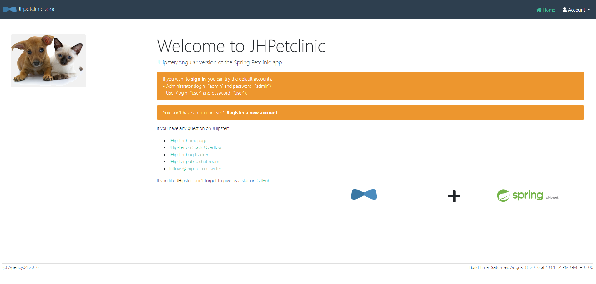
Pour se conncecter, il suffit d'aller sur Account -> Sign in, et de renseigner comme Username et comme Password admin.
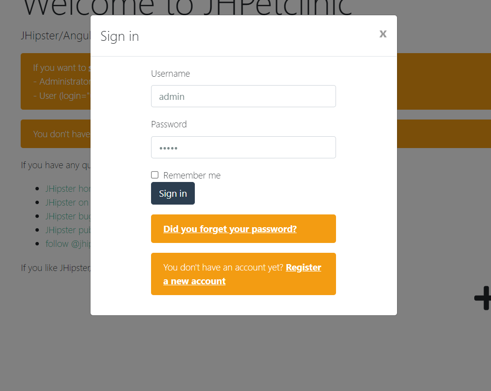
LINO
Connexion à une base de données
Pour gérer la configuration des bases de données on utilise la sous-commande lino dataconnector ou lino dc.
La documentation est disponible en lançant lino dc --help.
La commande lino dc add <alias> <path_bdd> -p -u <user> permet d'associer les coordonnées d'une base de données à un alias.
$ lino dc add source 'postgresql://localhost:5432/jhpetclinic?sslmode=disable' -p -u jhpetclinic
enter password:
successfully added dataconnector
L'attribut -p indique que vous allez passer le mot de passe à une invite de commande. Il est également possible de passer le mot de passe par variable d'environnement avec le paramètre -P.
lino dc list permet de lister les connecteurs.
$ lino dc list
{source postgresql://jhpetclinic@localhost:5432/jhpetclinic?sslmode=disable false { } { }}
Pour tester la connexion avec la base de données on utilise la commande lino dc ping <alias>.
$ lino dc ping source
ping success
La configuration se trouve dans le fichier dataconnector.yml dans le répertoire courant.
version: v1
dataconnectors:
- name: source
url: postgresql://jhpetclinic@localhost:5432/jhpetclinic?sslmode=disable
readonly: true
Vous pouvez éditer le fichier dataconnector.yml à la main pour modifier l'attribut readonly de la base source à true. Ceci bloque les commandes pouvant modifier le contenu de la base source.
Extraire les schémas
lino est capable de lire les méta-données de la base pour extraire les tables du schéma et il est également capable de retrouver les relations entre les tables en explorant les contraintes de clés étrangères.
Extraction du schéma table
Pour extraire le schéma des tables on utilise la commande lino table.
La documentation est disponible en lançant lino table --help.
lino table extract <alias> permet d'extraire les informations des tables de la base de données <alias> dans un fichier tables.yml dans le répertoire courant.
$ lino table extract source
lino finds 13 table(s)
Cette commande initialise le fichier tables.yml contenant la liste des tables qui se trouvent dans la base de données source.
version: v1
tables:
- name: databasechangeloglock
keys:
- id
- name: jhi_authority
keys:
- name
- name: jhi_persistent_audit_event
keys:
- event_id
- name: jhi_persistent_audit_evt_data
keys:
- name
- event_id
- name: jhi_user
keys:
- id
- name: jhi_user_authority
keys:
- user_id
- authority_name
- name: owners
keys:
- id
- name: pets
keys:
- id
- name: specialties
keys:
- id
- name: types
keys:
- id
- name: vets
keys:
- id
- name: vets_specialties
keys:
- specialties_id
- vet_id
- name: visits
keys:
- id
Extraction du schéma relation
Pour extraire le schéma des relations on utilise la commande lino relation.
La documentation est également disponible en lançant lino relation --help.
lino relation extract <alias> permet d'extraire les informations des tables de la base de données <alias> dans un fichier relation.yml également dans le répertoire courant. Les relations sont initiées à partir de contraintes de clé étrangère.
$ lino relation extract source
lino finds 8 relations from constraints
Cette commande initialise le fichier relation.yml contenant la liste des relations qui se trouvent dans la base de données source.
Chaque relation est décrite par un nom, une table parente avec sa clé primaire, une table enfant avec sa clé étrangère.
version: v1
relations:
- name: fk_authority_name
parent:
name: jhi_authority
keys:
- name
child:
name: jhi_user_authority
keys:
- authority_name
- name: fk_user_id
parent:
name: jhi_user
keys:
- id
child:
name: jhi_user_authority
keys:
- user_id
- name: fk_evt_pers_audit_evt_data
parent:
name: jhi_persistent_audit_event
keys:
- event_id
child:
name: jhi_persistent_audit_evt_data
keys:
- event_id
- name: fk_vets_specialties_vets_id
parent:
name: vets
keys:
- id
child:
name: vets_specialties
keys:
- vet_id
- name: fk_vets_specialties_specialties_id
parent:
name: specialties
keys:
- id
child:
name: vets_specialties
keys:
- specialties_id
- name: fk_pets_type_id
parent:
name: types
keys:
- id
child:
name: pets
keys:
- type_id
- name: fk_pets_owner_id
parent:
name: owners
keys:
- id
child:
name: pets
keys:
- owner_id
- name: fk_visits_pet_id
parent:
name: pets
keys:
- id
child:
name: visits
keys:
- pet_id
Si des relations fonctionnelles ne sont pas modélisées par des contraintes dans la base de données alors il est possible d'ajouter des relations à la main en éditant le fichier relations.yml.
Extraire des données
La commande lino pull est utilisé pour extraire des données de la base au format JSONline (Un objet JSON par ligne).
Pour plus de détail consultez l'aide lino pull --help.
Extraction des données d'une table
Le paramètre --table permet de spécifier le nom de la table à extraire. Par exemple, nous pouvons récupérer les données de la table pets avec la commande suivante :
$ lino pull --table pets source -l 1
{"birth_date":"2000-09-07T00:00:00Z","id":1,"name":"Leo","owner_id":1,"type_id":1}
Le paramètre -l permet de limiter le nombre de résultats en sortie (par défaut il est paramétré à 1 et -l 0 permet de retourner tous les résultats).
Extraction d'une entité sur plusieurs tables
lino permet d'extraire un sous ensemble cohérent d'animaux de la base de données. Pour ce faire lino a besoin de connaître la table de départ et les relations qu'ils doit suivre pour extraire un ensemble fonctionnellement cohérent.
1. Création d'un ingress-descriptor
L'objet ingress descriptor ou id décrit le chemin que doit suivre lino pour extraire les données. Pour plus de détail consultez l'aide lino id --help.
La commande lino id create <table> permet d'initialiser un ingress descriptor.
$ lino id create pets
successfully created ingress descriptor
Un fichier ingress-decriptor.yml est généré contenant le nom de la table de départ et les relations qui peuvent être atteintes depuis cette table.
version: v1
IngressDescriptor:
startTable: pets
relations:
- name: fk_pets_type_id
parent:
name: types
lookup: false
child:
name: pets
lookup: false
- name: fk_pets_owner_id
parent:
name: owners
lookup: false
child:
name: pets
lookup: false
- name: fk_visits_pet_id
parent:
name: pets
lookup: false
child:
name: visits
lookup: true
La commande display-plan permet de connaître le plan d'extraction de lino sans faire l'extraction.
$ lino id display-plan
step 1 - pull rows from pets
step 2 - pull rows from visits following →fk_visits_pet_id relationship for rows pulled at step 1
- Extraction des relations
Si on veut également extraire les propriétaires d'animaux il faut sélectionner la relation dans le fichier ingress-descriptor.yml.
- name: fk_pets_owner_id
parent:
name: owners
# sélection de la relation dans le sens pets -> owners
lookup: true
child:
name: pets
lookup: false
Dans le plan, lino indique bien qu'il va rechercher les informations des propriétaires.
$ lino id display-plan
step 1 - pull rows from pets
step 2 - pull rows from owners following ←fk_pets_owner_id relationship for rows pulled at step 1
step 3 - pull rows from visits following →fk_visits_pet_id relationship for rows pulled at step 1
Il est également possible d'extraire les informations du type d'animal (chat, poisson, lapin). Mais on peut également considérer cette table comme une table de référence qui est une configuration de l'application et pas une donnée fonctionnelle.
2. Extraction d'un animal
Pour extraire une grappe d'information cohérente on utilise la commande lino pull <alias>.
L'extraction va construire un objet JSON imbriqué contenant les informations de l'animal et de propriétaire sur un niveau inférieur.
$ lino pull source --limit 1
{"birth_date":"2000-09-07T00:00:00Z","fk_visits_pet_id":[],"id":1,"name":"Leo","owner_id":1,"type_id":1}
Le résultat est un enregistrement au format JSON écrit directement sur la sortie standard.
Il est possible d'utiliser des utilitaires annexes pour le mettre en forme.
$ lino pull source | jq
{
"birth_date": "2000-09-07T00:00:00Z",
"fk_pets_owner_id": {
"address": "110 W. Liberty St.",
"city": "Madison",
"first_name": "George",
"id": 1,
"last_name": "Franklin",
"telephone": "6085551023"
},
"fk_visits_pet_id": [],
"id": 1,
"name": "Leo",
"owner_id": 1,
"type_id": 1
}
On peut également mettre le résulat dans un fichier annexe.
$ lino pull source > leo.json
$ cat leo.json
{"birth_date":"2000-09-07T00:00:00Z","fk_visits_pet_id":[],"id":1,"name":"Leo","owner_id":1,"type_id":1}
Extraction de plusieurs entités
lino peut extraire plusieurs enregistrements. Pour faciliter le traitement en stream, chaque ligne contient un objet JSON (JSON Line).
$ lino pull source --limit 3
{"birth_date":"2000-09-07T00:00:00Z","fk_pets_owner_id":{"address":"110 W. Liberty St.","city":"Madison","first_name":"George","id":1,"last_name":"Franklin","telephone":"6085551023"},"fk_visits_pet_id":[],"id":1,"name":"Leo","owner_id":1,"type_id":1}
{"birth_date":"2002-08-06T00:00:00Z","fk_pets_owner_id":{"address":"638 Cardinal Ave.","city":"Sun Prairie","first_name":"Betty","id":2,"last_name":"Davis","telephone":"6085551749"},"fk_visits_pet_id":[],"id":2,"name":"Basil","owner_id":2,"type_id":6}
{"birth_date":"2001-04-17T00:00:00Z","fk_pets_owner_id":{"address":"2693 Commerce St.","city":"McFarland","first_name":"Eduardo","id":3,"last_name":"Rodriquez","telephone":"6085558763"},"fk_visits_pet_id":[],"id":3,"name":"Rosy","owner_id":3,"type_id":2}
Extraction filtrée
Il est possible d'ajouter des critères pour filtrer la table de départ à l'aide du paramètre --filter, -f pour des critères d'égalités ou --where, -w pour des clauses where SQL avancées.
$ lino pull source --filter type_id=4 --limit 1
{"birth_date":"2000-01-20T00:00:00Z","fk_pets_owner_id":{"address":"2387 S. Fair Way","city":"Madison","first_name":"Peter","id":5,"last_name":"McTavish","telephone":"6085552765"},"fk_visits_pet_id":[],"id":6,"name":"George","owner_id":5,"type_id":4}
$ lino pull --table owners source -w "id in (1,2,8)" -l 3
{"address":"110 W. Liberty St.","city":"Madison","first_name":"George","id":1,"last_name":"Franklin","telephone":"6085551023"}
{"address":"638 Cardinal Ave.","city":"Sun Prairie","first_name":"Betty","id":2,"last_name":"Davis","telephone":"6085551749"}
{"address":"345 Maple St.","city":"Madison","first_name":"Maria","id":8,"last_name":"Escobito","telephone":"6085557683"}
Si on veut extraire une série d'enregistrement basé sur une liste arbitraire de critère. Il est possible de passer cette liste sous la forme d'un fichier JSON Line à lino à l'aide du paramètre --filter-from-file, -F.
- Sous Linux:
$ cat > filter.jsonl <<EOF
heredoc> { "id" : 1 }
heredoc> { "id" : 4 }
heredoc> { "id" : 5 }
EOF
{"id": 1}
{"id": 4}
{"id": 5}
- Sous Windows:
PS> echo '{ "id" : 1 }' > filter.jsonl
PS> echo '{ "id" : 4 }' >> filter.jsonl
PS> echo '{ "id" : 5 }' >> filter.jsonl
PS > cat filter.jsonl
{"id": 1}
{"id": 4}
{"id": 5}
$ lino pull -F filter.jsonl source
{"birth_date":"2000-09-07T00:00:00Z","fk_pets_owner_id":{"address":"110 W. Liberty St.","city":"Madison","first_name":"George","id":1,"last_name":"Franklin","telephone":"6085551023"},"fk_visits_pet_id":[],"id":1,"name":"Leo","owner_id":1,"type_id":1}
{"birth_date":"2000-03-07T00:00:00Z","fk_pets_owner_id":{"address":"2693 Commerce St.","city":"McFarland","first_name":"Eduardo","id":3,"last_name":"Rodriquez","telephone":"6085558763"},"fk_visits_pet_id":[],"id":4,"name":"Jewel","owner_id":3,"type_id":2}
{"birth_date":"2000-11-30T00:00:00Z","fk_pets_owner_id":{"address":"563 Friendly St.","city":"Windsor","first_name":"Harold","id":4,"last_name":"Davis","telephone":"6085553198"},"fk_visits_pet_id":[],"id":5,"name":"Iggy","owner_id":4,"type_id":3}
Extraction avec choix des colonnes à extraire
Par défaut, la commande lino pull va extraire toutes les colonnes de chaque table composant la grappe (utilisation d'un select *).
Pour modifier ce comportement par défaut, il est possible de modifier le fichier table.yaml comme ceci (on affiche ici que la section du fichier qui concerne la table pets, le reste du fichier ne bouge pas).
- name: pets
keys:
- id
columns:
- name: name
- name: birth_date
Dans cet exemple, lino extraira seulement les colonnes name et birth_date (dans cet ordre). Cela permet donc aussi de spécifier l'ordre dans lequel nous souhaitons voir apparaître les champs dans le JSON.
$ lino pull --table pets --limit 1
{"name":"Leo","birth_date":"2000-09-07T00:00:00Z"}
Extraction en spécifiant le format des données JSON
Par défaut, les données extraites par la commande lino pull sont transformées dans le type JSON qui semble le plus adapté en fonction des informations fournies par le driver de base de données. Par exemple une colonne de type VARCHAR sera formatée dans le flux JSON avec des "guillemets" pour indiquer que c'est un type chaîne de caractère. De la même façon, une colonne de type NUMERIC sera formatée sans guillemets dans le flux JSON et avec un point pour le séparateur de décimales.
Une colonne de type BLOB sera quant à elle transformée en base64 puis le résultat de cette transformation sera intégré au flux JSON sous forme de chaîne de caractère (la spécification JSON ne permet pas de faire autrement pour les données binaires). Un autre cas qui peut se produire est lorsque la données fournie par la base de données contient des caractères non-imprimables, dans ce cas la données est aussi encodée en base64 puis ajoutée sous forme de chaîne de caractères.
Pour modifier ce comportement par défaut, il est possible d'utiliser la propriété export au niveau de chaque colonne spécifiée dans le fichier table.yaml. Ci dessous un exemple (on affiche ici que la section du fichier qui concerne la table pets, le reste du fichier ne bouge pas) :
- name: pets
keys:
- id
columns:
- name: name
- name: birth_date
export: timestamp
Les valeur de la colonne birth_date exportées dans le flux JSON seront alors converties en un timestamp unix (donc en numeric).
$ lino pull --table pets --limit 1
{"name":"Leo","birth_date":968277600}
Les options disponibles pour la propriété export sont :
| Valeur | Effet |
|---|---|
| Comportement par défaut, le format qui semble correspondre sera choisi pour encoder la donnée en JSON. | |
| string | La donnée sera exportée en JSON avec des "guillemets" (chaîne de caractères). |
| numeric | La donnée sera exportée en JSON sans "guillemets" et au format 0.00 ou 0 si pas de décimales (format numérique avec ou sans partie décimale). |
| base64 ou binary | La donnée sera encodée en base64 puis exportée en JSON avec des "guillemets" (chaîne de caractères encodée en base64). |
| datetime | La donnée sera d'abord convertie au format RFC3339 (ex: 2006-01-02T15:04:05Z) puis exportée en JSON avec des "guillemets" (chaîne de caractères représentant une date). |
| timestamp | La donnée sera d'abord convertie en timestamp UNIX puis exportée en JSON sans "guillemets" au format numérique (format numérique sans partie décimale). |
| no | La donnée ne sera ni exportée dans le flux JSON, ni extraite de la base de données. |
Si l'on souhaite définir le format de quelques colonnes dans le fichier table.yaml tout en exportant l'intégralité des colonnes, cela est possible en ajoutant le paramètre export: all sur l'objet table. Ce paramètre pourra à l'avenir prendre d'autres valeurs, mais c'est la seule option disponible actuellement.
- name: pets
keys:
- id
columns:
- name: name
- name: birth_date
export: timestamp
export: all
Recharger des données
La commande lino push est utilisé pour charger des données au format JSONline dans une base cible. Pour plus de détail consultez l'aide lino push --help.
Pour la suite de ce tutoriel, nous allons configurer une autre base de données qui sera la base de données de qualification. Pour cela nous allons ajouter à la suite du fichier docker-compose.yml le bout de code suivant :
bdd-ql:
image: postgres:12.3
environment:
- POSTGRES_USER=jhpetclinic
- POSTGRES_HOST_AUTH_METHOD=trust
ports:
- "5439:5432"
app-ql:
image: ag04/jhpetclinic:latest
environment:
_JAVA_OPTIONS: '-Xmx512m -Xms256m'
SPRING_PROFILES_ACTIVE: 'prod,swagger'
MANAGEMENT_METRICS_EXPORT_PROMETHEUS_ENABLED: 'true'
SERVER_SERVLET_CONTEXT_PATH: '/'
JHIPSTER_SLEEP: '5' # gives time for other services to boot before the application
DATASOURCE_URL: 'jdbc:postgresql://bdd-ql:5432/jhpetclinic'
JPA_DATABASE_PLATFORM: 'io.github.jhipster.domain.util.FixedPostgreSQL10Dialect'
JPA_DATABASE: 'POSTGRESQL'
DB_USER: 'jhpetclinic'
DB_PWD: 'jhpetclinic'
DB_NAME: 'jhpetclinic'
DB_SCHEMA: 'public'
MAIL_HOST: 'localhost'
MAIL_PORT: 25
MAIL_USERNAME: ''
MAIL_PWD: ''
MAIL_APP_BASE_URL: 'localhost:8001/'
ports:
- 8001:8080
depends_on:
- bdd-ql
Pour démarrer l'environnement de qualification,
$ docker-compose up -d app-ql bdd-ql
$ Creating tutoriel-lino_bdd-ql_1 ... done
$ Creating tutoiel-lino_app-ql_1 ... done
L'application relative à la base de données de qualification (cible) se trouve ici. Pour se connecter il suffit d'utiliser les mêmes identifiants que pour l'application source.
On peut voir que la base contient déjà des données.
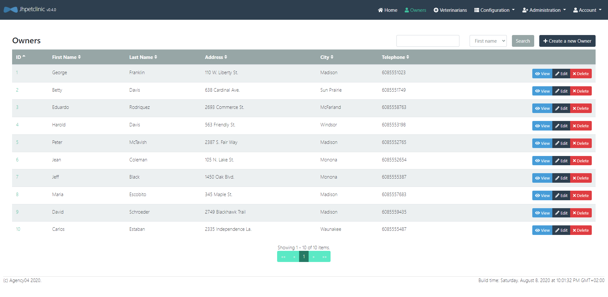
Connexion à la base cible
$ lino dc add cible 'postgresql://localhost:5432/jhpetclinic?sslmode=disable' -p -u jhpetclinic
enter password:
successfully added dataconnector
$ lino dc list
{source postgresql://jhpetclinic@localhost:5432/jhpetclinic?sslmode=disable false { } { }}
{cible postgresql://jhpetclinic@localhost:5432/jhpetclinic?sslmode=disable false { } { }}
$ lino dc ping cible
ping success
Si on regarde le fichier dataconnector.yaml on peut voir que la base de données cible a été ajouté.
version: v1
dataconnectors:
- name: source
url: postgresql://jhpetclinic@localhost:5432/jhpetclinic?sslmode=disable
readonly: true
- name: cible
url: postgresql://jhpetclinic@localhost:5432/jhpetclinic?sslmode=disable
readonly: false
Nettoyage
On peut nettoyer la base de donnée cible à l'aide du paramètre truncate.
$ lino push truncate cible </dev/null
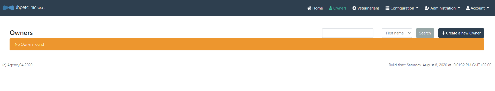
Insertion
On peut extraire les données qui se trouvent dans la base de données source puis les recharger sur la base de données cible.
Attention ! Avant il faut générer le fichier
ingress-descriptor.ymlcontenant le nom de la table de départ qui sera iciownerset de ses relations.
$ lino id create owners
Et modifier le paramètre lookup de la relation fk_pets_type_id.
version: v1
IngressDescriptor:
startTable: owners
relations:
- name: fk_pets_type_id
parent:
name: types
# à modifier
lookup: true
$ lino pull source -l 0 | lino push cible
Maintenant, on peut voir appraraître les données dans l'application cible. Si on regarde la fiche de Peter McTavish on voit qu'il a un seul animal (George le serpent).
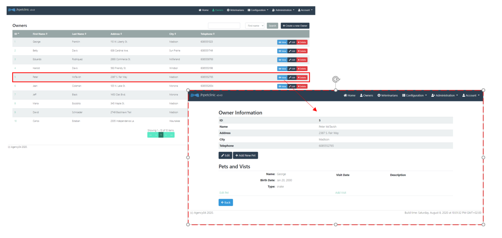
Si on considère le jeu de données suivant (Bob le serpent):
- Sous Linux:
$ cat > bob.jsonl <<EOF
{"birth_date":"2000-11-10T00:00:00Z","fk_visits_pet_id":[],"id":16,"name":"Bob","owner_id":5,"type_id":4}
EOF
- Sous Windows:
PS> echo '{"birth_date":"2000-11-10T00:00:00Z","fk_visits_pet_id":[],"id":16,"name":"Bob","owner_id":5,"type_id":4}' > bob.jsonl
Il est possible de le rajouter dans l'application avec la commande push.
$ lino id create pets
$ lino push cible < bob.jsonl
Maintenant Bob est disponible dans l'application
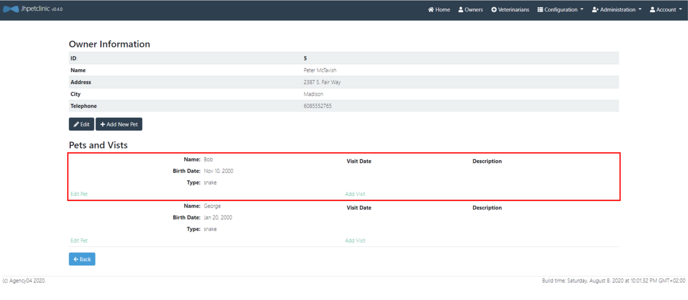
Mise à jour (update)
La commande push permet également de mettre à jour des enregistrements déjà présents dans la base de données cible.
$ lino push update cible < bob.jsonl
Suppression
La commande push permet également de supprimer des données ciblées.
Si on veut supprimer Bob de l'application (action impossible depuis l'IHM) on reprend le jeu de données de Bob.
$ lino push delete cible < bob.jsonl
Validation/conversion du format des données
Comme pour la commande pull (voir paramètre export), il est possible de configurer sous quel format se présentent les données dans le flux JSON. Pour cela nous pouvons utilier le paramètre import dans le fichier table.yaml au niveau de la définition des colonnes de chaque table.
Dans l'exemple suivant, la colonne birth_date de la table pets est déclarée comme ayant le format timestamp dans le flux JSON. Cela permet à LINO de comprendre quelle conversion doit avoir lieu si la colonne cible en base de données est de type DATE par exemple (on affiche ici que la section du fichier qui concerne la table pets, le reste du fichier ne bouge pas) :
- name: pets
keys:
- id
columns:
- name: birth_date
import: timestamp
Les valeurs disponibles pour la propriété import sont :
| Valeur | Effet |
|---|---|
| Comportement par défaut, LINO tentera d'utiliser directement la valeur lue depuis le JSON auprès du driver de base de données. | |
| string | La donnée sera lue depuis JSON au format chaîne de caractères (un plantage aura lieu si la valeur n'est pas au format chaîne de caractères). |
| numeric | La donnée sera lue depuis JSON au format 0.00 ou 0 (format numérique avec ou sans partie décimale). |
| base64 ou binary | La donnée sera lue au format chaîne de caractères, puis décodée en base64, et transmise sous format binaire à la base de données. |
| datetime | La donnée sera lue sous forme de chaîne de caractères représentant une date au format RFC3339 (ex: 2006-01-02T15:04:05Z). |
| timestamp | La donnée sera lue en numeric représentant un timestamp UNIX. |
Il est à noter que certains formats impliquent une conversion de données (le format binary par exemple, transforme la données d'une chaîne de caractères vers un tableau d'octets binaire).
Le paramètre import permet de contrôler de manière encore plus fine cette conversion implicite. Le format peut en effet être suivi du type sous-jacent à utiliser pour convertir la données. Par exemple import: binary(int64) ne convertira pas la donnée en tableau d'octets mais en un entier sur 64bit. Cela permet de gérer des cas particuliers qui peuvent se produire avec certaines bases de données, si le driver s'attend à voir un type différent de celui qui est produit par défaut.
Il est important de bien comprendre que dans cet exemple import: binary(int64), la partie gauche binary représente le format dans lequel la donnée est présenté sur le flux JSON, et la partie droite int64 représente le type dans lequel la valeur est convertie avant d'être envoyée au driver base de données (pour insertion ou mise à jour).
Les types pouvant être utilisés sont :
| Nom | Description |
|---|---|
| int | Entier signé sur 32 ou 64 bits selon l'architecture processeur |
| int64 | Entier signé sur 64 bits |
| int32 | Entier signé sur 32 bits |
| int16 | Entier signé sur 16 bits |
| int8 | Entier signé sur 8 bits |
| uint | Entier non signé sur 32 ou 64 bits selon l'architecture processeur |
| uint64 | Entier non signé sur 64 bits |
| uint32 | Entier non signé sur 32 bits |
| uint16 | Entier non signé sur 16 bits |
| uint8 | Entier non signé sur 8 bits |
| float64 | Décimal flottant sur 64 bits |
| float32 | Décimal flottant sur 32 bits |
| bool | Booléen |
| byte | Alias pour uint8 |
| rune | Alias pour uint32 |
| string | Chaîne de caractères |
| []byte | Tableau d'octets (valeur binaire) |
| time.Time | Date / heure |
| json.Number | Alias pour string |
PIMO
Pour la suite de ce tutoriel, nous souhaitons charger l'environnement de qualification (base de données cible) avec des données anonymisées.
L'application de qualification a déjà des données de disponible. L'IHM est disponible ici.
Configuration
pimo est un utilitaire qui va lire un flux JSON Line en entrée. Pour chaque ligne, une série de filtres (pipeline) est appliqué sur l'enregistrement. Chaque enregistrement modifié est écrit sur la sortie standard au format JSON Line.
La configuration de pimo est réalisée dans un fichier masking.yml.
# version du fichier de configuration PIMO
version: "1"
# Initialisation du générateur pseudo-aléatoire (optionel)
seed: 42
# Liste ordonnée des masque à appliquer
masking:
# Premier masque
- selector:
# Sélection du champ à modifier
jsonpath: "age"
mask:
# fonction de masque à appliquer
# Génération d'un nombre aléatoire compris entre min et max inclus
randomInt:
min: 18
max: 90
Vous pouvez retrouver les masques disponible dans pimo ici.
- Sous Linux:
$ cat > data.jsonl <<EOF
{"age": 18}
{"age": 39}
{"age": 52}
EOF
- Sous Windows:
PS> echo '{"age": 18}' > data.jsonl
PS> echo '{"age": 39}' >> data.jsonl
PS> echo '{"age": 52}' >> data.jsonl
$ pimo -c masking.yml < data.jsonl
{"age":79}
{"age":53}
{"age":71}
Il n'est pas obligatoire de préciser le fichier de masking si celui-ci porte le nom masking.yml et se trouve dans le répertoire courant sinon il faudra le préciser avec le paramètre --config, -c.
Générer des données
Pour faire de la sythèse de données, il suffit de masquer tous les champs par un filtre.
La première étape est de créer un fichier de masking (masking.yml):
version: "1"
seed: 42
masking:
- selector:
jsonpath: "id"
masks:
- add: ""
- incremental:
start: 1
increment: 1
- selector:
jsonpath: "date"
mask:
add: ""
- selector:
jsonpath: "date"
mask:
randDate:
dateMin: "1970-01-01T00:00:00Z"
dateMax: "2020-01-01T00:00:00Z"
Puis d'utiliser le paramètre --empty-input qui permet de générer des données sans aucune entrée, qu'il faut utiliser avec le paramètre --repeat, -r qui permet de générer plusieurs sorties pour une entrée.
$ pimo --empty-input -r 3
{"id":1,"date":"1993-05-24T23:50:53Z"}
{"id":2,"date":"1988-10-05T06:57:23Z"}
{"id":3,"date":"2015-08-17T06:47:42Z"}
Il est possible aussi de donner une structure de base à pimo, nous allons utiliser un JSON Line vide dans le fichier owners_empty.jsonl.
{"address":"","city":"","first_name":"","id":1,"last_name":"","telephone":""}
L'id n'est pas modifié, on choisit de l'incrémenter pour chaque itération. Pour les champs address, city, first_name et last_name on utilise des référentiels (voir plus bas, section Utilisation de référentiels).
version: "1"
seed: 42
masking:
- selector:
jsonpath: "telephone"
mask:
regex: "0[1-7]( ([0-9]){2}){4}"
- selector:
jsonpath: "adresse_brute"
masks:
- add-transient: ""
- randomChoiceInUri: "file://adresses.csv"
- selector:
jsonpath: "address"
mask:
template: '{{$a := split ";" (toString .adresse_brute) }}{{$a._2}}, {{$a._4}}'
- selector:
jsonpath: "city"
mask:
template: '{{$a := split ";" (toString .adresse_brute) }}{{$a._7}}'
- selector:
jsonpath: "first_name"
mask:
randomChoiceInUri: "pimo://nameFR"
- selector:
jsonpath: "last_name"
mask:
randomChoiceInUri: "pimo://surnameFR"
- selector:
jsonpath: "id"
mask:
incremental:
start: 1
increment: 1
pimo remplit les champs avec les masques et permet de générer plusieurs sorties pour une entrée.
- Sous Linux:
$ cat > owners_empty.jsonl <<EOF
heredoc> {"address":"","city":"","first_name":"","id":1,"last_name":"","telephone":""}
heredoc> EOF
- Sous Windows:
PS> echo '{"address":"","city":"","first_name":"","id":1,"last_name":"","telephone":""}' > owners_empty.jsonl
$ pimo --repeat 10 < owners_empty.jsonl
{"address":"85, Menauton","city":"Betbezer-d'Armagnac","first_name":"Bob","id":1,"last_name":"Muller","telephone":"01 98 40 40 42"}
{"address":"43, Le Bourg","city":"Betbezer-d'Armagnac","first_name":"Anne-Charlotte","id":2,"last_name":"Renard","telephone":"02 45 74 91 82"}
{"address":"33, Nayere","city":"Castelner","first_name":"Pierrette","id":3,"last_name":"Bernard","telephone":"02 10 73 21 43"}
au format tableau,
Les tableaux sont générés avec la commande
mlr --ijson --omd cat owners_empty.jsonlPour installermlrallez sur Miller.
| address | city | first_name | id | last_name | telephone |
|---|---|---|---|---|---|
| 110 W. Liberty St. | Madison | George | 1 | Franklin | 6085551023 |
| 638 Cardinal Ave. | Sun Prairie | Betty | 2 | Davis | 6085551749 |
| 2693 Commerce St. | McFarland | Eduardo | 3 | Rodriquez | 6085558763 |
| 563 Friendly St. | Windsor | Harold | 4 | Davis | 6085553198 |
| 2387 S. Fair Way | Madison | Peter | 5 | McTavish | 6085552765 |
| 105 N. Lake St. | Monona | Jean | 6 | Coleman | 6085552654 |
| 1450 Oak Blvd. | Monona | Jeff | 7 | Black | 6085555387 |
| 345 Maple St. | Madison | Maria | 8 | Escobito | 6085557683 |
| 2749 Blackhawk Trail | Madison | David | 9 | Schroeder | 6085559435 |
| 2335 Independence La. | Waunakee | Carlos | 10 | Estaban | 6085555487 |
Comme le générateur pseudo-aléatoire est configuré avec la même graine les données générées à partir de rien sont identique aux données masquées.
pimo peut ainsi être utilisé pour faire des tests de charge de l'application :
$ lino push truncate cible </dev/null
$ lino id create owners
$ cat owners_empty.jsonl | pimo --repeat 100 | lino push truncate cible
L'application QL est maintenant chargées avec une volumétrie plus importante.
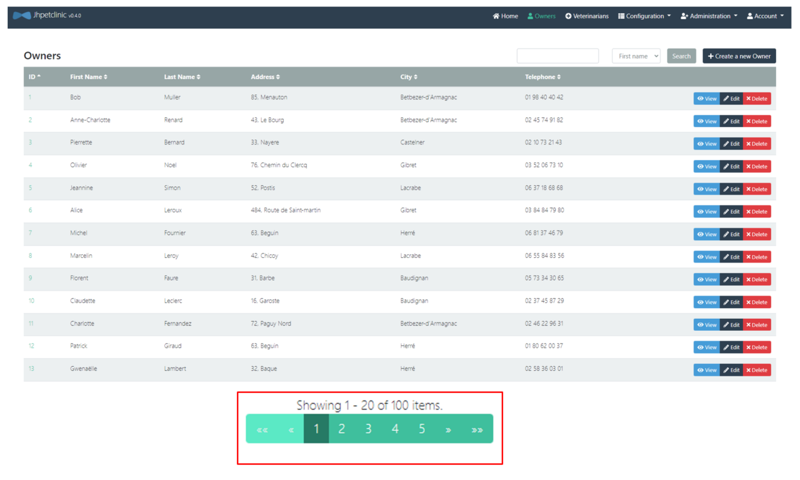
Modifier des données
Pour commencer, nous allons créer un fichier des propriétaires avec lino.
$ lino id set-parent-lookup fk_pets_type_id true
successfully update relation fk_pets_type_id in ingress descriptor
$ lino pull source -l 0 | lino push truncate cible
$ lino pull cible --limit 0 > owner.jsonl
Le fichier owner.jsonl contient des informations qui doivent être anonymisée.
$ mlr --ijson --omd cat owners.jsonl
| address | city | first_name | id | last_name | telephone |
|---|---|---|---|---|---|
| 110 W. Liberty St. | Madison | George | 1 | Franklin | 6085551023 |
| 638 Cardinal Ave. | Sun Prairie | Betty | 2 | Davis | 6085551749 |
| 2693 Commerce St. | McFarland | Eduardo | 3 | Rodriquez | 6085558763 |
| 563 Friendly St. | Windsor | Harold | 4 | Davis | 6085553198 |
| 2387 S. Fair Way | Madison | Peter | 5 | McTavish | 6085552765 |
| 105 N. Lake St. | Monona | Jean | 6 | Coleman | 6085552654 |
| 1450 Oak Blvd. | Monona | Jeff | 7 | Black | 6085555387 |
| 345 Maple St. | Madison | Maria | 8 | Escobito | 6085557683 |
| 2749 Blackhawk Trail | Madison | David | 9 | Schroeder | 6085559435 |
| 2335 Independence La. | Waunakee | Carlos | 10 | Estaban | 6085555487 |
Nous allons ici générer de nouveaux numéro de téléphone, le fichier masking.yml est le suivant:
version: "1"
seed: 42
masking:
- selector:
jsonpath: "telephone"
mask:
regex: "0[1-7]( ([0-9]){2}){4}"
Ensuite nous appliquons le masque aux données du fichier owner.jsonl avec la commande pimo:
$ pimo < owners.jsonl > owners_masked.jsonl
On obtient le fichier JSON Line avec les numéro de téléphone remplacés.
$ mlr --ijson --omd cat owners_masked.jsonl
| address | city | first_name | id | last_name | telephone |
|---|---|---|---|---|---|
| 110 W. Liberty St. | Madison | George | 1 | Franklin | 01 98 40 40 42 |
| 638 Cardinal Ave. | Sun Prairie | Betty | 2 | Davis | 02 45 74 91 82 |
| 2693 Commerce St. | McFarland | Eduardo | 3 | Rodriquez | 02 10 73 21 43 |
| 563 Friendly St. | Windsor | Harold | 4 | Davis | 03 52 06 73 10 |
| 2387 S. Fair Way | Madison | Peter | 5 | McTavish | 06 37 18 68 68 |
| 105 N. Lake St. | Monona | Jean | 6 | Coleman | 03 84 84 79 80 |
| 1450 Oak Blvd. | Monona | Jeff | 7 | Black | 06 81 37 46 79 |
| 345 Maple St. | Madison | Maria | 8 | Escobito | 06 55 84 83 56 |
| 2749 Blackhawk Trail | Madison | David | 9 | Schroeder | 05 73 34 30 65 |
| 2335 Independence La. | Waunakee | Carlos | 10 | Estaban | 02 37 45 87 29 |
Il est possible de recharger l'environnement de qualification directement en mode streaming.
$ lino pull source --limit 0 | pimo | lino push truncate cible
Les nouveaux numéros de téléphones sont affichés dans l'environnement de qualification.
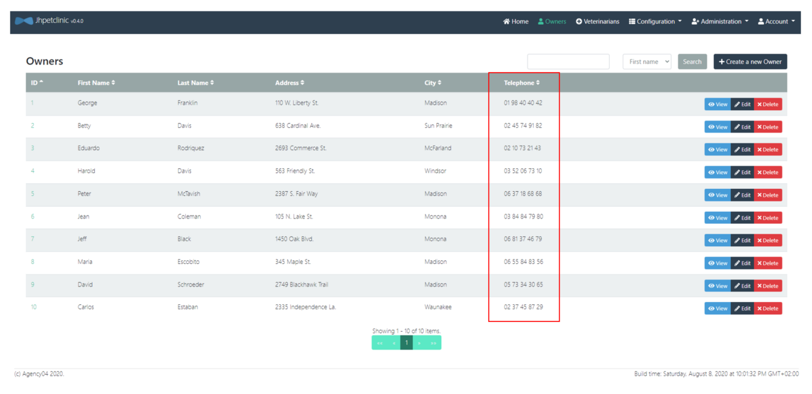
Utilisation de référentiels
Référentiels externe
pimo permet de réaliser un masquage réaliste en utilisant un référentiel externe.
La première étape est la récupération d'un listing d'adresses françaises.
- Sous Linux:
$ curl https://adresse.data.gouv.fr/data/ban/adresses/latest/csv/adresses-40.csv.gz -o - | gunzip > adresses.csv
- Sous Windows:
PS> Invoke-WebRequest https://adresse.data.gouv.fr/data/ban/adresses/latest/csv/adresses-40.csv.gz -OutFile adresses.csv
Le fichier adresses.csv contient des lignes CSV.
id;id_fantoir;numero;rep;nom_voie;code_postal;code_insee;nom_commune;code_insee_ancienne_commune;nom_ancienne_commune;x;y;lon;lat;alias;nom_ld;libelle_acheminement;nom_afnor;source_position;source_nom_voie
40030_xdqd7o_00001;;1;;Le Bourg;40310;40030;Baudignan;;;463951.29;6336689.46;0.051661;44.089542;;;BAUDIGNAN;LE BOURG;inconnue;inconnue
Pour chaque enregistrement on rajoute un champ avec le filtre add.
- selector:
# Sélection du champ à modifier
jsonpath: "adresse_brute"
mask:
# fonction de masque à appliquer
add: ""
Ce filtre modifie la structure du JSON line en rajoutant un nouveau champ ("adresse_brute": "").
pimo est capable de faire un tir aléatoire dans un fichier pour chaque enregistrement.
- selector:
# Sélection du champ à modifier
jsonpath: "adresse_brute"
mask:
# fonction de masque à appliquer
randomChoiceInUri: "file://adresses.csv"
pimo propose un moteur de template pour réaliser des transformations complexes.
- selector:
# Sélection du champ à modifier
jsonpath: "address"
mask:
# fonction de masque à appliquer
template: '{{$a := split ";" (toString .adresse_brute) }}{{$a._2}}, {{$a._4}}'
Dans notre cas nous voulons découper la ligne CSV et concaténer la colonne 2 et 4.
La colonne 7 va être utilisé pour la ville.
- selector:
# Sélection du champ à modifier
jsonpath: "city"
mask:
# fonction de masque à appliquer
template: '{{$a := split ";" (toString .adresse_brute) }}{{$a._7}}'
Le champ adresse_brute n'est pas nécessaire dans le résultat, le filtrer remove est utilisé pour le supprimer.
- selector:
# Sélection du champ à modifier
jsonpath: "adresse_brute"
mask:
# fonction de masque à appliquer
remove: true
On obtient des lignes avec des adresses existantes.
| address | city | first_name | id | last_name | telephone |
|---|---|---|---|---|---|
| 92, Rue de Francillon | Biscarrosse | George | 1 | Franklin | 05 30 85 92 14 |
| 1687, Route de Saas | Rivière-Saas-et-Gourby | Betty | 2 | Davis | 06 16 08 56 96 |
| 1050, Route du Hallot | Perquie | Eduardo | 3 | Rodriquez | 06 62 38 83 99 |
| 42, Avenue Etienne Castaings | Ondres | Harold | 4 | Davis | 02 41 24 37 32 |
| 11, Allée du Champ Ferme | Saugnacq-et-Muret | Peter | 5 | McTavish | 07 09 88 18 00 |
| 30, Avenue Debussy | Capbreton | Jean | 6 | Coleman | 01 37 31 86 02 |
| 16, Clos des Vignerons | Saint-Martin-de-Hinx | Jeff | 7 | Black | 01 39 86 93 80 |
| 80, Impasse Georges Sabde | Saint-Pierre-du-Mont | Maria | 8 | Escobito | 01 62 46 20 07 |
| 147, Rue des Roses | Léon | David | 9 | Schroeder | 01 38 01 76 12 |
| 53, Rue des Mûriers | Biscarrosse | Carlos | 10 | Estaban | 06 91 52 79 43 |
On peut également utiliser le masque add-transient qui est la combinaison du masque add et du masque remove.
- selector:
# Sélection du champ à modifier
jsonpath: "adresse_brute"
mask:
# fonction de masque à appliquer
add-transient: ""
Le champ adresse_brute est ajouter dans chaque JSON Line et contient la valeur "" et il sera supprimer à la fin du masking, il n'apparaitra pas dans la sortie finale.
Référentiels inclus dans PIMO
Pour simplifier la configuration, pimo embarque une collection de référentiels souvent utilisés.
- selector:
jsonpath: "first_name"
mask:
# Un prénom français
randomChoiceInUri: "pimo://nameFR"
- selector:
jsonpath: "last_name"
mask:
# Un nom français
randomChoiceInUri: "pimo://surnameFR"
Toutes les données sont masquées et on peut l'utilisé sur un environnement de test.
| address | city | first_name | id | last_name | telephone |
|---|---|---|---|---|---|
| 92, Rue de Francillon | Biscarrosse | Vincent | 1 | Richard | 05 30 85 92 14 |
| 1687, Route de Saas | Rivière-Saas-et-Gourby | Aude | 2 | Giraud | 06 16 08 56 96 |
| 1050, Route du Hallot | Perquie | Viviane | 3 | Perez | 06 62 38 83 99 |
| 42, Avenue Etienne Castaings | Ondres | Roberte | 4 | Masson | 02 41 24 37 32 |
| 11, Allée du Champ Ferme | Saugnacq-et-Muret | Ambroise | 5 | Lefevre | 07 09 88 18 00 |
| 30, Avenue Debussy | Capbreton | Alphonse | 6 | Dumont | 01 37 31 86 02 |
| 16, Clos des Vignerons | Saint-Martin-de-Hinx | Ursula | 7 | Duval | 01 39 86 93 80 |
| 80, Impasse Georges Sabde | Saint-Pierre-du-Mont | Remi | 8 | Brunet | 01 62 46 20 07 |
| 147, Rue des Roses | Léon | Melchior | 9 | Francois | 01 38 01 76 12 |
| 53, Rue des Mûriers | Biscarrosse | Sophie | 10 | Clement | 06 91 52 79 43 |
Gestion des erreurs dans LINO - PIMO
Les logs de lino et pimo sont écrit sur la sortie standard d'erreur. Même si on utilise des pipes unix | pour chaîner les commandes les log sont toujours disponible dans la console.
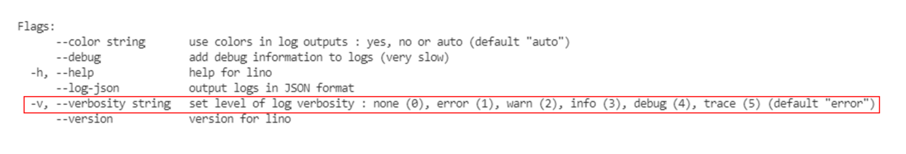
$ lino id create pets
$ lino push truncate cible </dev/null
$ lino pull source -l 0 | lino push cible
multiple errors: [pq: insert or update on table "pets" violates foreign key constraint "fk_pets_type_id" (No error capture configured)], [pq: Could not complete operation in a failed transaction], [<nil>]
Pour gérer les erreurs on utilise
lino pull source -l 0 | lino push cible -v5
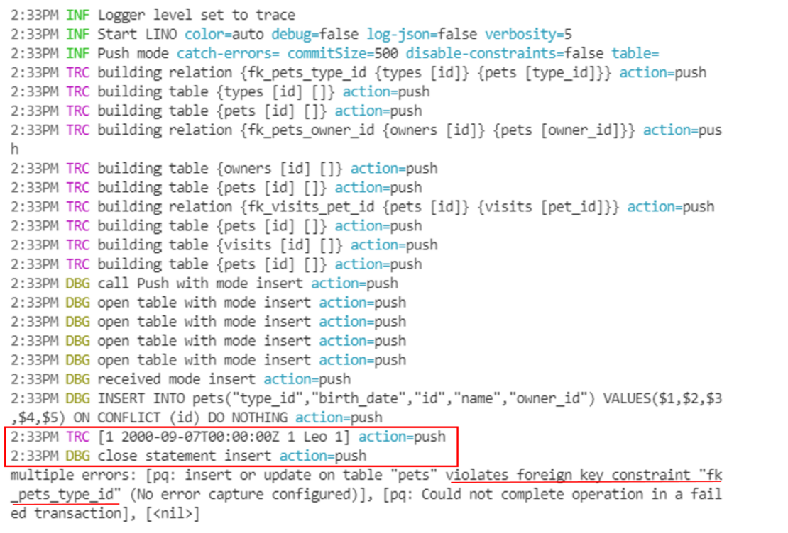
$ lino id create owners
successfully created ingress descriptor
$ lino id set-parent-lookup fk_pets_type_id true
successfully update relation fk_pets_type_id in ingress descriptor
$ lino pull source -l 0 | lino push cible -v3
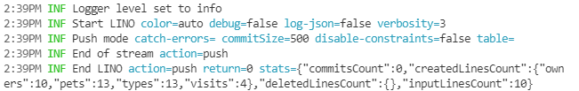
Redirection des erreurs
lino pull -f id=3 source -v3 | jq
lino pull -f id=3 source -v5 --log-json 2> error.json
lino pull -f id=3 source -v5 --log-json 2> >(tee error.json)
SIGO
Installation
Vous pouvez récupérer le binaire de sigo sur la page CGI-FR/SIGO/releases, en choisissant la version et l'environnement qui convient.
- Sous Linux
$ wget <url>/<file>.tar.gz --output-document sigo.tar.gz
$ tar xzf sigo.tar.gz
$ sigo --version
- Sous Windows
PS> Invoke-WebRequest <url>/<file>.tar.gz -OutFile sigo.tar.gz
PS> Save-Module -Name 7Zip4Powershell -Path .
PS> Import-Module .\7Zip4Powershell\2.1.0\7Zip4Powershell.psd1
PS> Expand-7Zip sigo.tar.gz .
PS> Expand-7Zip sigo.tar .
PS> $env:Path += ";."
PS> sigo --version
Vérifier l'installation avec la commande sigo --help.
Utilisation de SIGO avec des données mixtes
Dans ce tutoriel, nous allons faire l'anonymisation d'un jeu de données générer par pimo.
Supposons que nous avons dans un fichier des caractéristiques sur des individus tels que l'âge, le poids, la taille, la région, un attribut indiquant si la personne fume ou non et si elle est malade (donnée sensible).
Génération de données avec PIMO
pimo -c masking.yml --empty-input -r 100 > data.json
masking.yml
version: "1"
seed: 42
masking:
- selector:
jsonpath: "age"
masks:
- add : ""
- randomInt:
min: 18
max: 95
- selector:
jsonpath: "poids"
masks:
- add : ""
- randomDecimal:
min: 50
max: 100
precision: 2
- selector:
jsonpath: "taille"
masks:
- add : ""
- randomDecimal:
min: 1.40
max: 2.00
precision: 2
- selector:
jsonpath: "departement"
masks:
- add : ""
- randomChoice:
- "Auvergne-Rhône-Alpes"
- "Bourgogne-Franche-Comté"
- "Bretagne"
- "Centre-Val de Loire"
- "Corse"
- "Grand-Est"
- "Hauts-de-France"
- "Île-de-France"
- "Normandie"
- "Nouvelle-Aquitaine"
- "Occitanie"
- "Pays de Loire"
- "Provence-Alpes-Côte d'Azur"
- selector:
jsonpath: "fume"
masks:
- add : ""
- randomChoice:
- "oui"
- "non"
- selector:
jsonpath: "malade"
masks:
- add : ""
- randomChoice:
- "oui"
- "non"
data.json
{"age":25,"poids":90.98,"taille":1.43,"departement":"Corse","fume":"non","malade":"oui"}
{"age":70,"poids":54.56,"taille":1.96,"departement":"Occitanie","fume":"non","malade":"non"}
{"age":58,"poids":77.71,"taille":1.64,"departement":"Provence-Alpes-Côte d'Azur","fume":"oui","malade":"oui"}
{"age":19,"poids":75.69,"taille":1.59,"departement":"Provence-Alpes-Côte d'Azur","fume":"oui","malade":"oui"}
{"age":70,"poids":81.77,"taille":1.72,"departement":"Corse","fume":"oui","malade":"non"}
sigo est capable d'anonymiser des jeux de données composés essentiellement de flottants. Pour pouvoir anonymiser un jeu de données comportant des attributs catégoriels comme dans l'exemple ci-dessus, il faut préalablement effectuer une conversion pour transformer les attributs textuels en flottant. Cette manipulation est très facile avec pimo.
Conversion avec PIMO
Nous allons utiliser la notion de cache dans pimo, ce qui va nous permettre de créer un dictionnaire clé-valeur ou la clé sera la valeur de l'attribut catégoriel et la valeur sera le flottant correspondant à la clé, que l'on gardera en mémoire afin de faire la conversion inverse une fois l'anonymisation faite.
cache.yml
version: "1"
seed: 42
masking:
- selector:
jsonpath: "departement"
mask:
incremental:
start: 1
increment: 1
cache: "cacheDepartement"
- selector:
jsonpath: "fume"
mask:
incremental:
start: 1
increment: 1
cache: "cacheFume"
caches:
cacheDepartement:
unique: true
reverse: false
cacheFume:
unique: true
reverse: false
pimo -c cache.yml --dump-cache cacheDepartement=departement.json <<EOF
{"departement": "Auvergne-Rhône-Alpes"}
{"departement": "Bourgogne-Franche-Comté"}
{"departement": "Bretagne"}
{"departement": "Centre-Val de Loire"}
{"departement": "Corse"}
{"departement": "Grand-Est"}
{"departement": "Hauts-de-France"}
{"departement": "Île-de-France"}
{"departement": "Normandie"}
{"departement": "Nouvelle-Aquitaine"}
{"departement": "Occitanie"}
{"departement": "Pays de Loire"}
{"departement": "Provence-Alpes-Côte d'Azur"}
EOF
departement.json
{"key":"Normandie","value":9}
{"key":"Bourgogne-Franche-Comté","value":2}
{"key":"Bretagne","value":3}
{"key":"Hauts-de-France","value":7}
{"key":"Grand-Est","value":6}
{"key":"Île-de-France","value":8}
{"key":"Nouvelle-Aquitaine","value":10}
{"key":"Occitanie","value":11}
{"key":"Pays de Loire","value":12}
{"key":"Auvergne-Rhône-Alpes","value":1}
{"key":"Centre-Val de Loire","value":4}
{"key":"Corse","value":5}
{"key":"Provence-Alpes-Côte d'Azur","value":13}
pimo -c cache.yml --dump-cache cacheFume=fume.json <<EOF
{"fume": "oui"}
{"fume": "non"}
EOF
fume.json
{"key":"oui","value":1}
{"key":"non","value":2}
pimo --load-cache cacheDepartement=departement.json --load-cache cacheFume=fume.json -c transpose.yml < data.json > data_transpose.json
transpose.yml
version: "1"
seed: 42
masking:
- selector:
jsonpath: "departement"
mask:
fromCache: "cacheDepartement"
- selector:
jsonpath: "fume"
mask:
fromCache: "cacheFume"
caches:
cacheDepartement:
unique: true
reverse: false
cacheFume:
unique: true
reverse: false
data_transpose.json
{"age":25,"poids":90.98,"taille":1.43,"departement":5,"fume":2,"malade":"oui"}
{"age":70,"poids":54.56,"taille":1.96,"departement":11,"fume":2,"malade":"non"}
{"age":58,"poids":77.71,"taille":1.64,"departement":13,"fume":1,"malade":"oui"}
{"age":19,"poids":75.69,"taille":1.59,"departement":13,"fume":1,"malade":"oui"}
{"age":70,"poids":81.77,"taille":1.72,"departement":5,"fume":1,"malade":"non"}
Une fois que notre jeu de donnée est entièrement en flottant (mis à part la donnée sensible, mais cela n'est pas dérangeant puisque sigo ne modifiera pas cette donnée). Nous pouvons passer à l'anonymisation.
Anonymisation avec SIGO
sigo -q age,poids,taille,departement,fume -s malade -k 4 -l 2 -a meanAggregation < data_transpose.json > data_sigo.json
data_sigo.json
{"age":32,"poids":58.81,"taille":1.51,"departement":4,"fume":1.5,"malade":"oui"}
{"age":32,"poids":58.81,"taille":1.51,"departement":4,"fume":1.5,"malade":"oui"}
{"age":32,"poids":58.81,"taille":1.51,"departement":4,"fume":1.5,"malade":"non"}
{"age":32,"poids":58.81,"taille":1.51,"departement":4,"fume":1.5,"malade":"oui"}
{"age":48,"poids":66.07,"taille":1.56,"departement":7.25,"fume":1.75,"malade":"oui"}
{"age":48,"poids":66.07,"taille":1.56,"departement":7.25,"fume":1.75,"malade":"non"}
{"age":48,"poids":66.07,"taille":1.56,"departement":7.25,"fume":1.75,"malade":"non"}
{"age":48,"poids":66.07,"taille":1.56,"departement":7.25,"fume":1.75,"malade":"non"}
Transformation inverse avec PIMO
On veut pouvoir retrouver nos données avec le même format que les données originales, pour ce faire nous allons utiliser le paramètre reverse de l'option cache.
reverse.yml
version: "1"
seed: 42
masking:
- selector:
jsonpath: "departement"
masks:
# arrondir la valeur de l'attribut
- template: "{{round (toString .departement) 0 }}" # string
# changer le type (number en float64)
- fromjson: "departement" # float64
# retrouver la clé correspondant à la valeur dans le fichier departement.json
- fromCache: "cacheDepartement"
- selector:
jsonpath: "fume"
masks:
- template: "{{round (toString .fume) 0 }}"
- fromjson: "fume"
- fromCache: "cacheFume"
caches:
cacheDepartement:
unique: false
reverse: true
cacheFume:
unique: false
reverse: true
pimo --load-cache cacheDepartement=departement.json --load-cache cacheFume=fume.json -c reverse.yml < data_sigo.json > data_out.json
data_out.json
{"age":32,"poids":58.81,"taille":1.51,"departement":"Centre-Val de Loire","fume":"non","malade":"oui"}
{"age":32,"poids":58.81,"taille":1.51,"departement":"Centre-Val de Loire","fume":"non","malade":"oui"}
{"age":32,"poids":58.81,"taille":1.51,"departement":"Centre-Val de Loire","fume":"non","malade":"non"}
{"age":32,"poids":58.81,"taille":1.51,"departement":"Centre-Val de Loire","fume":"non","malade":"oui"}
{"age":48,"poids":66.07,"taille":1.56,"departement":"Hauts-de-France","fume":"non","malade":"oui"}
{"age":48,"poids":66.07,"taille":1.56,"departement":"Hauts-de-France","fume":"non","malade":"non"}
{"age":48,"poids":66.07,"taille":1.56,"departement":"Hauts-de-France","fume":"non","malade":"non"}
{"age":48,"poids":66.07,"taille":1.56,"departement":"Hauts-de-France","fume":"non","malade":"non"}
Utilisation du fichier de configuration pour anonymiser
Il est également possible d'utiliser SIGO à l'aide d'un fichier de configuration pour renseigner les paramètres de l'anonymisation.
sigo.yml
version: "1"
kAnonymity: 4
lDiversity: 2
sensitives:
- malade
aggregation: meanAggregation
rules:
- name: age
- name: poids
- name: taille
- name: departement
- name: fume
sigo -c sigo.yml < data_transpose.json > data_sigo.json
data_sigo.json
{"age":32,"poids":58.81,"taille":1.51,"departement":4,"fume":1.5,"malade":"oui"}
{"age":32,"poids":58.81,"taille":1.51,"departement":4,"fume":1.5,"malade":"oui"}
{"age":32,"poids":58.81,"taille":1.51,"departement":4,"fume":1.5,"malade":"non"}
{"age":32,"poids":58.81,"taille":1.51,"departement":4,"fume":1.5,"malade":"oui"}
{"age":48,"poids":66.07,"taille":1.56,"departement":7.25,"fume":1.75,"malade":"oui"}
{"age":48,"poids":66.07,"taille":1.56,"departement":7.25,"fume":1.75,"malade":"non"}
{"age":48,"poids":66.07,"taille":1.56,"departement":7.25,"fume":1.75,"malade":"non"}
{"age":48,"poids":66.07,"taille":1.56,"departement":7.25,"fume":1.75,"malade":"non"}